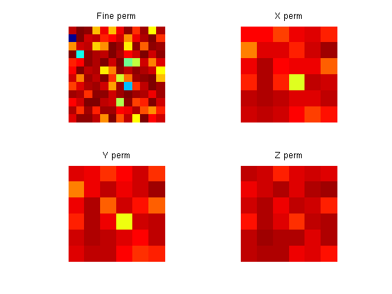
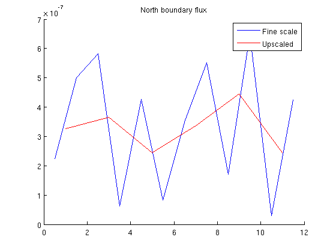

Contents
mrstModule add upscaling coarsegrid % Simple upscaling example % NB: only works for Cartesian grids cellDims = [12, 12 1]; upscaled = [6, 6, 1]; % number of blocks in the coarse grid verbose = true;
define grids
G = cartGrid(cellDims, cellDims); G = computeGeometry(G); G_ups = cartGrid(upscaled, cellDims); G_ups = computeGeometry(G_ups); p = partitionUI(G, upscaled); p = processPartition (G, p, 'Verbose', verbose); CG = generateCoarseGrid(G, p, 'Verbose', verbose); rock.perm = convertFrom(100 * rand(G.cells.num,1), milli()*darcy()); fluid = initSingleFluid('mu' , 1*centi*poise , ... 'rho', 1014*kilogram/meter^3);
Elapsed time is 0.126634 seconds.
BC
fine scale bc:
bc = pside([], G, 'FRONT', 0); bnd_faces = bc.face; bc = pside(bc, G, 'BACK', 1*barsa()); % upscaled bc bc_ups = pside([], G_ups, 'FRONT', 0); bnd_faces_ups = bc_ups.face; bc_ups = pside(bc_ups, G_ups, 'BACK', 1*barsa());
Set up solution structures
xRef = initResSol( G, 0.0);
xUps = initResSol( G_ups, 0.0);
S = computeMimeticIP(G, rock, 'Verbose', verbose);
Using inner product: 'ip_simple'. Computing cell inner products ... Elapsed time is 0.016732 seconds. Assembling global inner product matrix ... Elapsed time is 0.000166 seconds.
Compute upscaled perm
rockUps.perm = upscalePerm(G, CG, rock, 'Verbose', verbose, 'S', S); % plot all permeabilities figure; subplot(2,2,1) plotCellData(G, log10(rock.perm));axis equal tight off coaxis = caxis; title('Fine perm') subplot(2,2,2) plotCellData(G_ups, log10(rockUps.perm(:,1))); axis equal tight off title('X perm') caxis(coaxis) subplot(2,2,3) plotCellData(G_ups, log10(rockUps.perm(:,2))); axis equal tight off title('Y perm') caxis(coaxis) subplot(2,2,4) plotCellData(G_ups, log10(rockUps.perm(:,3))); axis equal tight off title('Z perm') caxis(coaxis)
Computing upscaled permeabilities... Elapsed time is 0.327056 seconds.
Make upscaled system structures
S_ups = computeMimeticIP(G_ups, rockUps, 'Verbose', verbose);
Using inner product: 'ip_simple'. Computing cell inner products ... Elapsed time is 0.003588 seconds. Assembling global inner product matrix ... Elapsed time is 0.000065 seconds.
Solve systems
xRef = solveIncompFlow(xRef, G, S, fluid, 'bc', bc, 'Solver', 'hybrid'); xUps = solveIncompFlow(xUps, G_ups, S_ups, fluid, 'bc', bc_ups, ... 'Solver', 'hybrid');
Compare inflow
Check the total flux sum. These values are very close to each other.
flux1 = sum(xRef .flux(bnd_faces)); flux2 = sum(xUps .flux(bnd_faces_ups)); disp(['Sum flux bnd finescale : ', num2str(flux1)]); disp(['Sum flux bnd upscaled Darcy: ', num2str(flux2)]); flux1_face = xRef.flux(bnd_faces) ./G.faces.areas(bnd_faces); flux2_face = xUps.flux(bnd_faces_ups)./G_ups.faces.areas(bnd_faces_ups); clf; hold on % Plot the flux on each interface along the boundary condition. The % smoothing effect of the upscaling proceedure is apparent: The fine scale % heterogenities are smoothed resulting in a flux which equal in the % average sense. plot(G.faces.centroids(bnd_faces,1), flux1_face) plot(G_ups.faces.centroids(bnd_faces_ups,1), flux2_face, 'red' ) title('North boundary flux') legend({'Fine scale', 'Upscaled'})
Sum flux bnd finescale : 4.0579e-06 Sum flux bnd upscaled Darcy: 3.9207e-06